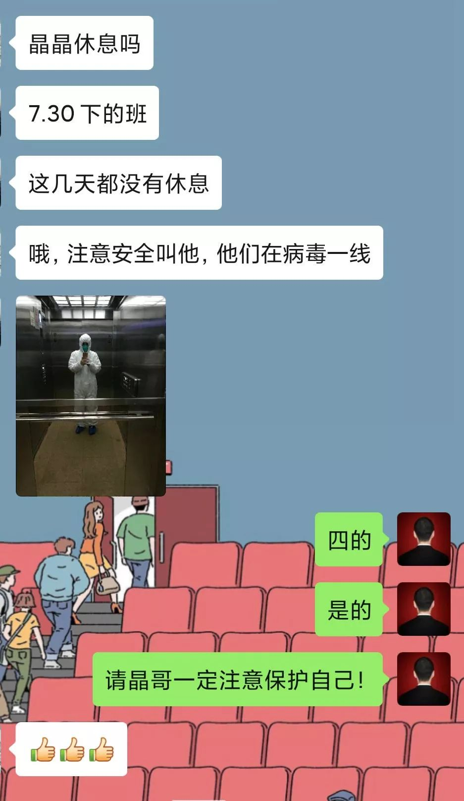
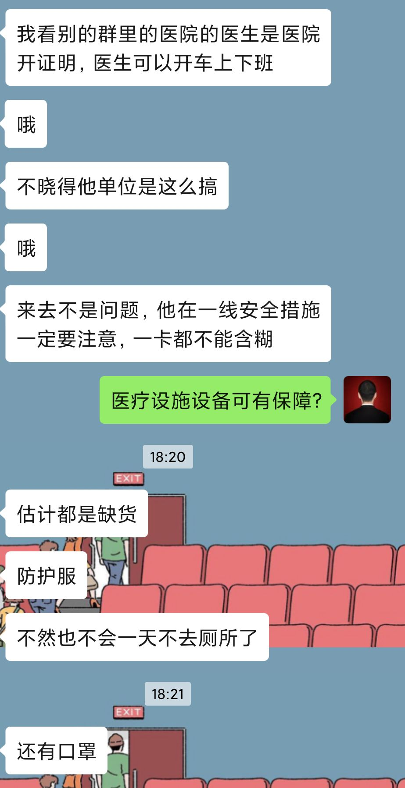
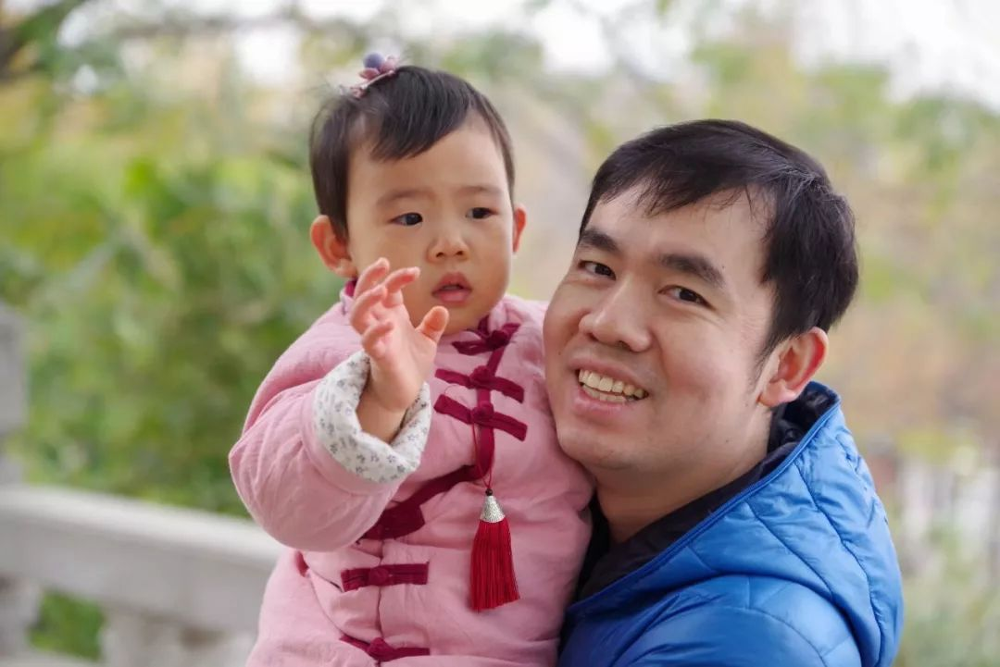
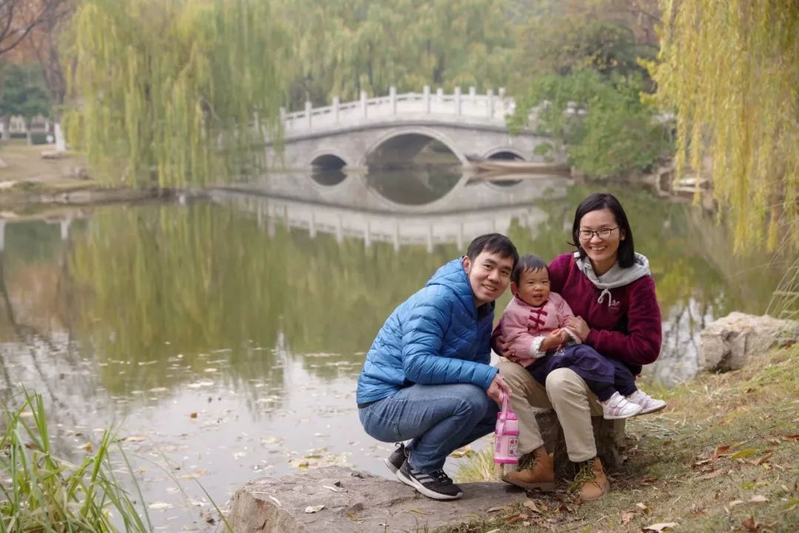

“世界上最遥远的距离”
原文链接 备份链接 20190414于武昌 2020年1月23日。 农历腊月二十九。 武汉封城第一天。 一觉醒来，收到短信： “自2020年1月23日10时起，全市城市公交、地铁、轮渡、长途客运暂停运营；无特殊原因，市民不要离开武汉， …

2020年1月25日。
农历正月初一，春节。
武汉封城第三天。
天门封城第二天。
和小天使云拜年结束互道晚安，已是凌晨1点。
仍放不下手机。
刷完群消息，手贱又点开微博，看到这条，突然顿了下：哦，原来我不是一个人。因为号被封了，只能看不能关转评。于是截图发了个票圈。我说对不起我也想睡可是我真的睡不着。我知道这样做很傻，除了刷存在感毫无益处。可我是真希望能冲在一线，至少让冲在一线的人知道，我与他们同在。哪怕仅是一句祝福和鼓劲。
醒来，又收到一条非常痛心的消息：
“1月25日早上9点12分，湖北省中西医结合医院（新华医院）耳鼻喉科门诊一名工作人员证实，2020年1月16日，该院耳鼻喉科医生梁武东疑似感染新型冠状病毒肺炎，18日，其转到金银潭医院就诊，于1月25日早上7时许不幸去世，享年62岁。”
这是疫情发生后第一起公开报道的医护人员被感染病故的消息。我不由担心起晶哥来，他是武汉市中医院呼吸科医生。他大我两岁，我俩都巨蟹，一起长大，从小就是我学习的榜样。内敛的他，从不轻言伤痛。记得那年外婆走，他连夜赶回奔丧，未及殡仪馆，短暂洗尘打尖之际，念及婆婆养育之恩，扶碗泣而泪下，我在场也暗自抹泪，喟叹男儿柔肠。时值瘟疫肆虐之际，作为医生的他，义不容辞开拔一线，救急救难连续作战，舍小家为大家，此为男儿忠胆 。以晶哥为例，举全国上下，前赴后继者，皆是有血有肉有家有口有名有姓之人，赤如肝胆，无愧栋梁！若今国负之，吾辈必咎之！




20200119 晶哥口罩自拍

20200124 晶哥防护服自拍
今天是大年初一啊，本该是阖家团聚的日子！ 我为什么觉得我幸运！？一觉醒来我还可以躺在热乎的被窝里，喝完伯伯刚端上来的一碗蛋酒，舒舒服服。虽然出去不方便，但仍可以选择睡个回笼觉，或者像个废物一样在床上躺一天，美其名曰自我隔离。但我只要一想到同样是父母辈、兄弟姐妹的他们正为我们的安危忙碌着，战斗着，牺牲着，我就无法安然自若，我又要继续为他们而刷屏了，直到陪着他们平安凯旋归来！

晶哥抱着嘟嘟 20191214 于古琴台公园

晶哥一家三口 20191214 于古琴台公园


水妈
长按二维码向我转账
受苹果公司新规定影响，微信 iOS 版的赞赏功能被关闭，可通过二维码转账支持公众号。
文章已于修改
原文链接 备份链接 20190414于武昌 2020年1月23日。 农历腊月二十九。 武汉封城第一天。 一觉醒来，收到短信： “自2020年1月23日10时起，全市城市公交、地铁、轮渡、长途客运暂停运营；无特殊原因，市民不要离开武汉， …
原文链接 备份链接 3月23日。 封城第61天。我从初一（元月25日）开始在微博作记录，比封城晚了两天。所以，这是第59篇。 今日大晴。很舒服的天气。下午终于把狗送到了宠物医院。它的皮肤病再次发作，全身溃烂，不治疗也是不行了。我自己手指也 …
原文链接 备份链接 本文由娱志The Review原创出品 华东师范大学传播学院学生娱评号 转载需申请授权 作者 | Moe，苏博 编辑 | 华实 导语 “自2020年1月23日10时起，全市城市公交、地铁、轮渡、长途客运暂停运营；无特殊 …
原文链接 备份链接 正月二十八。 封城第三十天。天啦，已经这么久了。今天的阳光很好，天气很暖。很让人有出门踏青的冲动。以前老汉口的人喜欢到后湖踏青，拎着竹篮，装上点心，坐着黄包车就去了。现在的三镇，大多湖边都成了公园，处处都是可以踏青的地 …
原文链接 备份链接 3月6日。 今天阴天。阴沉沉的，心情随之而阴。空气中充斥着沉闷，无处不伤感。疫情与昨天比，没有明显变化，新增确诊人数依然上百，呈僵持局面。这种僵持还有多久，下周能结束吗？ 这几天，我也像很多武汉人一样，压抑，郁闷，加上 …